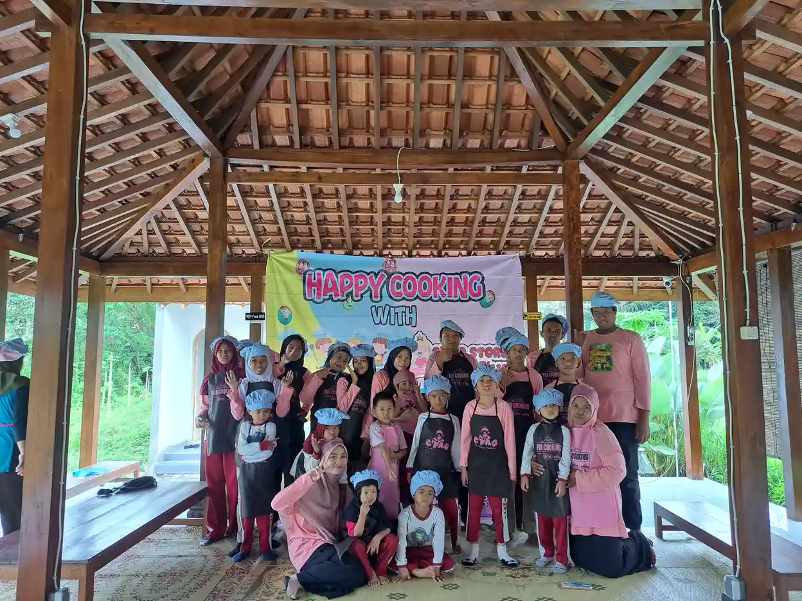

Panti asuhan di Yogyakarta memiliki peran yang sangat penting dalam memberikan perlindungan, pengasuhan, dan pendidikan bagi anak-anak yang membutuhkan. Sebagai kota yang dikenal dengan semangat gotong royong dan kepedulian sosial yang tinggi, Yogyakarta menjadi rumah bagi puluhan lembaga sosial yang berdedikasi untuk kesejahteraan anak-anak yatim piatu, terlantar, maupun anak berkebutuhan khusus.
Selain panti asuhan, Yogyakarta juga memiliki beragam yayasan disabilitas yang memberikan layanan pendampingan, rehabilitasi, dan pemberdayaan bagi penyandang disabilitas. Keberadaan yayasan-yayasan ini mencerminkan komitmen masyarakat Yogyakarta dalam mewujudkan kehidupan yang inklusif dan berkeadilan bagi semua warganya, termasuk mereka yang memiliki kebutuhan khusus.
Artikel ini menyajikan daftar lengkap panti asuhan dan yayasan disabilitas di Yogyakarta beserta alamat, fokus layanan, dan cara Anda bisa turut membantu. Kami juga akan membahas tips memilih yayasan yang tepat untuk berdonasi serta peran komunitas dalam mendukung lembaga-lembaga sosial lokal. Untuk memahami lebih dalam tentang apa itu anak berkebutuhan khusus (ABK), Anda bisa membaca artikel khusus yang telah kami siapkan.
Daftar Isi
- Panti Asuhan dan Yayasan di Yogyakarta: Gambaran Umum
- Daftar Panti Asuhan di Yogyakarta
- Daftar Yayasan Disabilitas di Yogyakarta
- YUKA: Yayasan untuk Anak Berkebutuhan Khusus di Yogyakarta
- Cara Membantu Panti Asuhan dan Yayasan
- Tips Memilih Yayasan untuk Berdonasi
- Peran Komunitas dalam Mendukung Yayasan Lokal
- FAQ Seputar Panti Asuhan dan Yayasan di Yogyakarta
Panti Asuhan dan Yayasan di Yogyakarta: Gambaran Umum
Daerah Istimewa Yogyakarta (DIY) dikenal sebagai salah satu provinsi dengan jumlah lembaga kesejahteraan sosial yang cukup banyak di Indonesia. Hal ini tidak terlepas dari budaya masyarakat Yogyakarta yang memiliki tradisi kuat dalam hal kepedulian sosial dan kegotongroyongan. Dari Kota Yogyakarta hingga kabupaten seperti Sleman, Bantul, Gunungkidul, dan Kulon Progo, tersebar berbagai lembaga yang siap membantu anak-anak dan individu yang membutuhkan pendampingan.
Secara umum, lembaga sosial di Yogyakarta dapat dikategorikan ke dalam beberapa jenis. Pertama, ada panti asuhan atau yang kini secara resmi disebut Lembaga Kesejahteraan Sosial Anak (LKSA). LKSA Yogyakarta berfokus pada pengasuhan anak-anak yatim, piatu, yatim piatu, dan anak-anak dari keluarga kurang mampu. Mereka menyediakan tempat tinggal, makanan, pendidikan, serta bimbingan mental dan spiritual bagi anak-anak asuhnya.
Kedua, terdapat yayasan disabilitas yang secara khusus melayani penyandang disabilitas, termasuk anak berkebutuhan khusus. Yayasan-yayasan ini menyediakan layanan terapi, pendidikan khusus, pelatihan keterampilan, dan program pemberdayaan yang disesuaikan dengan kebutuhan masing-masing individu. Beberapa di antaranya juga menjalankan program advokasi untuk mendorong terciptanya lingkungan yang lebih inklusif di masyarakat.
Ketiga, ada yayasan sosial yang memiliki cakupan lebih luas, meliputi pendidikan, kesehatan, dakwah, dan pemberdayaan masyarakat. Yayasan jenis ini biasanya memiliki berbagai program yang saling terhubung untuk memberikan dampak yang lebih menyeluruh bagi penerima manfaatnya. Untuk mengenal lebih dalam tentang yayasan sosial yang bergerak di bidang anak berkebutuhan khusus, silakan baca artikel kami tentang yayasan sosial anak berkebutuhan khusus.
Data dari Dinas Sosial DIY menunjukkan bahwa kebutuhan akan lembaga-lembaga sosial seperti ini masih sangat tinggi. Ribuan anak di Yogyakarta masih membutuhkan akses terhadap pendidikan yang layak, pengasuhan yang penuh kasih sayang, dan pendampingan yang tepat untuk tumbuh kembang mereka. Inilah mengapa keberadaan panti asuhan dan yayasan di Yogyakarta begitu vital bagi masa depan generasi muda.
"Setiap anak berhak mendapatkan kasih sayang, pendidikan, dan kesempatan untuk berkembang, tanpa memandang latar belakang atau kondisi mereka. Itulah yang menjadi semangat kami di Yogyakarta."
Daftar Panti Asuhan di Yogyakarta
Berikut adalah beberapa panti asuhan di Yogyakarta yang telah lama beroperasi dan dikenal memiliki reputasi baik dalam memberikan pengasuhan bagi anak-anak yang membutuhkan. Daftar ini bisa menjadi referensi bagi Anda yang ingin berdonasi, menjadi relawan, atau sekadar mengetahui lembaga-lembaga sosial di sekitar Yogyakarta.
1. Panti Asuhan Yatim Muhammadiyah
Alamat: Jl. Parangtritis, Yogyakarta
Panti Asuhan Yatim Muhammadiyah merupakan salah satu panti asuhan tertua dan paling dikenal di Yogyakarta. Didirikan di bawah naungan organisasi Muhammadiyah, panti asuhan ini telah mengasuh ribuan anak yatim dan dhuafa selama berpuluh-puluh tahun. Program yang dijalankan meliputi penyediaan tempat tinggal, pendidikan formal dari tingkat SD hingga SMA, bimbingan keagamaan, serta pelatihan keterampilan hidup.
Anak-anak asuh di sini mendapatkan akses pendidikan yang setara dengan anak-anak pada umumnya. Panti ini juga aktif mengadakan kegiatan ekstrakurikuler seperti olahraga, kesenian, dan pengembangan bakat untuk mendukung tumbuh kembang anak secara holistik. Dukungan dari masyarakat dalam bentuk donasi, wakaf, dan tenaga relawan sangat diharapkan untuk keberlangsungan program-program ini.
2. Panti Asuhan Putri Aisyiyah
Alamat: Jl. KH Ahmad Dahlan, Yogyakarta
Panti Asuhan Putri Aisyiyah berfokus pada pengasuhan anak-anak perempuan yatim, piatu, dan dhuafa. Bernaung di bawah organisasi Aisyiyah (sayap perempuan Muhammadiyah), panti ini memiliki komitmen kuat dalam memberdayakan anak-anak perempuan melalui pendidikan dan penanaman nilai-nilai keagamaan serta kemandirian.
Selain pendidikan formal, anak-anak asuh di Panti Asuhan Putri Aisyiyah juga mendapatkan pelatihan keterampilan seperti menjahit, memasak, dan keterampilan digital. Program-program ini dirancang agar kelak mereka bisa mandiri dan memiliki bekal yang cukup untuk menghadapi kehidupan dewasa. Panti ini juga rutin mengadakan kegiatan sosial bersama masyarakat sekitar sebagai bentuk inklusi sosial yang nyata.
3. SOS Children's Villages Yogyakarta
Lokasi: Yogyakarta
SOS Children's Villages adalah organisasi internasional yang beroperasi di lebih dari 130 negara, termasuk Indonesia. Cabang Yogyakarta menjadi salah satu yang cukup aktif dalam memberikan pengasuhan berbasis keluarga bagi anak-anak yang kehilangan pengasuhan orang tua. Konsep unik dari SOS Children's Villages adalah model pengasuhan "keluarga", di mana setiap rumah dipimpin oleh seorang "ibu" yang merawat beberapa anak seperti keluarga sungguhan.
Pendekatan ini dianggap lebih humanis dibandingkan model panti asuhan konvensional karena anak-anak tumbuh dalam suasana keluarga yang hangat dan penuh kasih sayang. SOS juga menyediakan program pendidikan, kesehatan, dan pengembangan komunitas. Mereka membuka kesempatan bagi masyarakat untuk menjadi sponsor anak atau donor tetap guna mendukung keberlangsungan program.

4. LKSA Al-Hikmah, Sleman
Alamat: Sleman, Yogyakarta
LKSA Al-Hikmah merupakan Lembaga Kesejahteraan Sosial Anak yang berlokasi di Kabupaten Sleman. Lembaga ini menjalankan fungsi pengasuhan bagi anak-anak yatim dan dhuafa dengan pendekatan yang memadukan pendidikan umum, pendidikan agama Islam, dan pembinaan karakter. Sebagai LKSA yang terdaftar resmi, Al-Hikmah menjalankan standar pelayanan yang sesuai dengan regulasi Kementerian Sosial.
Program unggulan LKSA Al-Hikmah meliputi bimbingan belajar intensif, hafalan Al-Quran, pelatihan life skills, dan kegiatan sosial kemasyarakatan. Anak-anak asuh juga didorong untuk aktif berpartisipasi dalam kegiatan masyarakat agar mereka terbiasa bersosialisasi dan membangun jaringan sosial yang positif. Keberadaan LKSA seperti Al-Hikmah sangat penting untuk menjangkau anak-anak di wilayah yang mungkin belum terlayani oleh lembaga-lembaga yang lebih besar.
Tahukah Anda?
Istilah "panti asuhan" secara resmi telah diganti oleh pemerintah Indonesia menjadi Lembaga Kesejahteraan Sosial Anak (LKSA). Perubahan istilah ini bertujuan untuk menghilangkan stigma dan menekankan bahwa lembaga ini bukan sekadar tempat penampungan, melainkan institusi yang memberikan layanan kesejahteraan menyeluruh bagi anak-anak.
Daftar Yayasan Disabilitas di Yogyakarta
Yogyakarta juga memiliki sejumlah yayasan disabilitas yang berperan penting dalam mendampingi, memberdayakan, dan mengadvokasi hak-hak penyandang difabel. Berikut beberapa yayasan yang patut Anda ketahui.
1. YUKA (Yayasan Ukhuwah Kaffah Amanatullah)
Alamat: Jl. Kronggahan Raya II, RT 04 RW 07, Kronggahan II, Trihanggo, Gamping, Sleman, Yogyakarta (Utara RSA UGM)
YUKA merupakan yayasan yang berfokus pada pendidikan inklusi untuk anak berkebutuhan khusus di Yogyakarta. Melalui Sekolah Inklusi Taruna Imani, YUKA menyediakan layanan pendidikan yang disesuaikan dengan kebutuhan setiap anak, mulai dari anak dengan autisme, ADHD, down syndrome, cerebral palsy, hingga berbagai kondisi disabilitas lainnya. YUKA akan dibahas lebih detail pada bagian berikutnya.
2. Yayasan Sayap Ibu
Alamat: Jl. Wonosari KM 8, Yogyakarta
Yayasan Sayap Ibu merupakan salah satu yayasan tertua di Indonesia yang berfokus pada pengasuhan anak-anak dengan disabilitas berat. Didirikan sejak era kemerdekaan, yayasan ini telah menjadi rumah bagi ratusan anak dengan berbagai kondisi disabilitas yang membutuhkan perawatan intensif. Layanan yang diberikan meliputi perawatan medis, terapi fisik, terapi okupasi, serta pendidikan khusus yang disesuaikan dengan kemampuan masing-masing anak.
Yayasan Sayap Ibu juga menjalankan program rehabilitasi berbasis komunitas dan advokasi hak-hak penyandang disabilitas. Mereka bekerja sama dengan berbagai rumah sakit, universitas, dan lembaga pemerintah untuk memastikan bahwa anak-anak asuhnya mendapatkan layanan terbaik. Kebutuhan akan dukungan dana dan tenaga relawan di yayasan ini sangat tinggi mengingat biaya perawatan anak-anak dengan disabilitas berat yang cukup besar.
3. Yayasan Autis Mitra Ananda
Alamat: Jl. Kaliurang, Yogyakarta
Yayasan Autis Mitra Ananda secara khusus melayani anak-anak dengan gangguan spektrum autisme (Autism Spectrum Disorder/ASD) di Yogyakarta. Yayasan ini menyediakan berbagai program terapi dan pendidikan yang dirancang khusus untuk membantu anak-anak autis mengembangkan kemampuan komunikasi, interaksi sosial, dan kemandirian mereka.
Program yang ditawarkan meliputi terapi perilaku (Applied Behavior Analysis/ABA), terapi wicara, terapi sensori integrasi, serta program pendidikan individual. Yayasan ini juga aktif memberikan edukasi dan pelatihan kepada orang tua agar mereka bisa menjadi pendamping yang efektif bagi anak-anaknya di rumah. Untuk memahami lebih lanjut tentang program pemberdayaan ABK, Anda bisa membaca artikel tentang program pemberdayaan anak berkebutuhan khusus.
4. CIQAL (Center for Improving Qualified Activity in Life of People with Disabilities)
Lokasi: Yogyakarta
CIQAL merupakan lembaga yang berfokus pada peningkatan kualitas hidup penyandang disabilitas melalui pendekatan pemberdayaan dan advokasi. Berbeda dengan yayasan yang bersifat pengasuhan, CIQAL lebih menekankan pada penguatan kapasitas penyandang disabilitas agar mereka bisa mandiri, berpartisipasi aktif dalam masyarakat, dan mendapatkan hak-hak mereka secara penuh.
Program CIQAL meliputi pelatihan keterampilan kerja, pendampingan hukum, advokasi kebijakan publik terkait aksesibilitas, serta program inklusi ekonomi bagi penyandang disabilitas. Lembaga ini juga aktif mendorong pemerintah daerah untuk mengimplementasikan kebijakan yang ramah disabilitas, mulai dari infrastruktur yang aksesibel hingga kesempatan kerja yang setara. Kerja CIQAL sangat penting dalam mewujudkan inklusi sosial yang sesungguhnya.

YUKA: Yayasan untuk Anak Berkebutuhan Khusus di Yogyakarta
Di antara berbagai yayasan anak berkebutuhan khusus di Yogyakarta, YUKA (Yayasan Ukhuwah Kaffah Amanatullah) memiliki tempat khusus di hati kami karena menjadi bagian langsung dari perjalanan kami. YUKA berdiri dengan satu visi yang sederhana namun kuat: setiap anak, terlepas dari kondisi dan keterbatasan yang dimilikinya, berhak mendapatkan pendidikan, kasih sayang, dan kesempatan untuk berkembang.
YUKA mengelola Sekolah Inklusi Taruna Imani yang berlokasi di Sleman, Yogyakarta. Sekolah ini menerapkan sistem pendidikan inklusi di mana anak-anak berkebutuhan khusus belajar bersama dengan anak-anak reguler dalam lingkungan yang saling mendukung. Pendekatan ini tidak hanya bermanfaat bagi anak berkebutuhan khusus yang mendapatkan stimulasi sosial yang lebih kaya, tetapi juga bagi anak-anak reguler yang belajar tentang empati, toleransi, dan penghargaan terhadap perbedaan sejak dini.
Layanan YUKA untuk Anak Berkebutuhan Khusus
- Pendidikan Inklusi: Kurikulum yang diadaptasi sesuai kebutuhan individual setiap anak, dengan guru pendamping khusus yang terlatih.
- Terapi dan Rehabilitasi: Terapi wicara, terapi okupasi, terapi sensori integrasi, dan terapi perilaku yang dilakukan oleh tenaga profesional.
- Program Life Skills: Pelatihan keterampilan hidup sehari-hari seperti memasak, berbelanja, dan kebersihan diri untuk meningkatkan kemandirian anak.
- Bimbingan Keagamaan: Pembinaan spiritual yang disesuaikan dengan kemampuan setiap anak untuk membangun karakter dan nilai-nilai positif.
- Pendampingan Keluarga: Konsultasi dan pelatihan bagi orang tua agar mereka mampu menjadi pendamping terbaik bagi anak-anak mereka.
- Kegiatan Sosial dan Rekreasi: Kunjungan wisata, cooking class, dan kegiatan sosial lainnya untuk mengembangkan keterampilan sosial anak.
Salah satu keunggulan YUKA dibandingkan lembaga serupa adalah pendekatannya yang sangat personal dan penuh kasih sayang. Setiap anak diperlakukan sebagai individu unik dengan potensi yang berbeda-beda. Tim pengajar dan terapis YUKA bekerja sama membuat rencana pendidikan individual (IEP) yang disesuaikan dengan kebutuhan, minat, dan kemampuan masing-masing anak.
YUKA juga aktif melakukan kegiatan-kegiatan yang memperkaya pengalaman anak-anak asuhnya. Kunjungan ke tempat-tempat wisata edukasi, kelas memasak bersama, kegiatan seni dan budaya, serta interaksi dengan masyarakat luas menjadi bagian rutin dari program YUKA. Kegiatan-kegiatan ini penting untuk melatih keterampilan sosial, membangun kepercayaan diri, dan memberikan pengalaman belajar yang menyenangkan di luar ruang kelas.
Bagi Anda yang tertarik untuk mengetahui lebih detail tentang bagaimana memilih yayasan yang tepat untuk anak berkebutuhan khusus, kami merekomendasikan untuk membaca panduan kami tentang memilih yayasan anak berkebutuhan khusus. Artikel tersebut membahas kriteria-kriteria penting yang perlu Anda pertimbangkan sebelum memutuskan lembaga pendampingan yang tepat.
Cara Membantu Panti Asuhan dan Yayasan
Banyak orang ingin membantu panti asuhan dan yayasan di Yogyakarta tetapi tidak tahu harus memulai dari mana. Sebenarnya, ada banyak cara yang bisa Anda lakukan untuk berkontribusi, dan tidak semuanya berkaitan dengan uang. Berikut adalah berbagai cara Anda bisa memberikan bantuan yang bermakna.
Donasi Finansial
Donasi uang tetap menjadi bentuk bantuan yang paling fleksibel dan dibutuhkan oleh lembaga-lembaga sosial. Dana ini bisa digunakan untuk membiayai operasional sehari-hari, membayar gaji pengasuh dan guru, memenuhi kebutuhan makan dan pakaian anak-anak asuh, serta membiayai program-program pengembangan. Anda bisa berdonasi secara langsung, melalui transfer bank, atau memanfaatkan platform donasi online yang kini semakin mudah diakses.
Beberapa hal penting yang perlu diperhatikan saat berdonasi secara finansial:
- Pastikan lembaga memiliki rekening resmi atas nama yayasan, bukan atas nama pribadi.
- Minta tanda terima atau bukti donasi untuk transparansi.
- Pertimbangkan untuk menjadi donatur tetap (bulanan) karena ini memberikan kepastian dana bagi lembaga.
- Cek legalitas lembaga melalui Kementerian Hukum dan HAM atau Dinas Sosial setempat.
Donasi Barang
Selain uang, donasi berupa barang juga sangat dihargai. Namun, penting untuk memastikan bahwa barang yang Anda donasikan benar-benar dibutuhkan oleh lembaga penerima. Sebelum mengirimkan donasi barang, ada baiknya menghubungi pihak panti asuhan atau yayasan terlebih dahulu untuk menanyakan apa saja yang sedang mereka butuhkan. Barang-barang yang umumnya dibutuhkan antara lain:
- Bahan makanan pokok (beras, minyak goreng, gula, telur, dan sebagainya).
- Peralatan sekolah (buku, alat tulis, tas, seragam).
- Pakaian layak pakai (utamakan yang masih baru atau kondisi sangat baik).
- Peralatan terapi dan edukasi untuk yayasan disabilitas.
- Peralatan kebersihan dan sanitasi.
- Perangkat elektronik seperti komputer atau tablet untuk mendukung kegiatan belajar.
Menjadi Relawan
Waktu dan keahlian Anda juga merupakan aset berharga yang bisa Anda bagikan. Menjadi relawan di panti asuhan atau yayasan di Yogyakarta bisa menjadi pengalaman yang sangat memperkaya, baik bagi Anda maupun bagi anak-anak yang Anda dampingi. Beberapa bentuk kerelawanan yang bisa Anda lakukan:
- Relawan pengajar: Membantu mengajar mata pelajaran tertentu, les tambahan, atau kegiatan bimbingan belajar.
- Relawan keterampilan: Mengajarkan keterampilan khusus seperti seni, musik, memasak, bahasa asing, atau keterampilan digital.
- Relawan medis: Jika Anda adalah tenaga kesehatan, Anda bisa membantu dalam pemeriksaan kesehatan rutin atau terapi.
- Relawan administrasi: Membantu dalam pengelolaan data, pelaporan, atau pengembangan sistem manajemen lembaga.
- Relawan acara: Membantu mengorganisir kegiatan-kegiatan khusus seperti perayaan hari besar, lomba, atau kegiatan rekreasi.

Kampanye dan Penggalangan Dana
Anda juga bisa membantu dengan cara menyebarkan informasi tentang keberadaan dan kebutuhan panti asuhan dan yayasan di Yogyakarta. Media sosial menjadi alat yang sangat efektif untuk kampanye kesadaran publik. Anda bisa membagikan kisah-kisah inspiratif dari lembaga yang Anda dukung, mengorganisir penggalangan dana (fundraising) di kalangan komunitas Anda, atau mengajak teman dan keluarga untuk turut berpartisipasi.
Beberapa ide kampanye yang bisa Anda lakukan:
- Menggalang donasi di media sosial pada momen-momen spesial seperti ulang tahun, Ramadan, atau hari anak nasional.
- Mengadakan acara amal seperti bazaar, konser, atau fun run dengan hasil yang disumbangkan ke lembaga sosial.
- Membuat konten edukatif tentang isu-isu yang dihadapi anak-anak dan penyandang disabilitas untuk meningkatkan kesadaran publik.
- Mengajak perusahaan tempat Anda bekerja untuk menjalankan program CSR (Corporate Social Responsibility) bersama lembaga sosial setempat.
Tips Memilih Yayasan untuk Berdonasi
Dengan banyaknya panti asuhan dan yayasan di Yogyakarta, mungkin Anda merasa bingung untuk menentukan ke mana sebaiknya donasi Anda disalurkan. Berikut adalah beberapa tips yang bisa membantu Anda memilih yayasan yang tepat dan terpercaya untuk berdonasi.
1. Periksa Legalitas dan Akreditasi
Langkah pertama dan paling mendasar adalah memastikan bahwa yayasan yang Anda pilih memiliki legalitas yang jelas. Yayasan yang terdaftar resmi biasanya memiliki akta notaris pendirian, Surat Keputusan (SK) dari Kementerian Hukum dan HAM, NPWP yayasan, serta izin operasional dari Dinas Sosial setempat. Lembaga yang terakreditasi oleh Kementerian Sosial biasanya memiliki standar layanan yang lebih terjamin.
2. Transparansi Keuangan
Yayasan yang baik menjalankan prinsip transparansi dalam pengelolaan keuangannya. Mereka biasanya mempublikasikan laporan keuangan secara berkala, baik melalui website, media sosial, atau laporan tahunan. Jangan ragu untuk menanyakan bagaimana donasi Anda akan digunakan dan meminta bukti pelaporan keuangan. Yayasan yang terbuka dan jujur tentang keuangannya layak mendapatkan kepercayaan Anda.
3. Kunjungi Langsung
Jika memungkinkan, luangkan waktu untuk mengunjungi yayasan atau panti asuhan yang ingin Anda dukung. Kunjungan langsung akan memberikan gambaran nyata tentang kondisi lembaga, kualitas program yang dijalankan, dan bagaimana anak-anak asuh diperlakukan. Anda juga bisa bertemu langsung dengan pengurus dan staf untuk berdiskusi tentang visi, misi, dan rencana pengembangan lembaga.
4. Evaluasi Program dan Dampak
Yayasan yang efektif tidak hanya menjalankan program, tetapi juga mengukur dampak dari program-program tersebut. Perhatikan apakah yayasan memiliki indikator keberhasilan yang jelas, melakukan evaluasi rutin, dan bisa menunjukkan capaian-capaian konkret dari programnya. Misalnya, berapa anak yang berhasil lulus sekolah, berapa penyandang disabilitas yang berhasil mendapatkan pekerjaan, atau bagaimana perkembangan anak-anak asuh dari waktu ke waktu.
5. Fokus pada Keberlanjutan
Pilih yayasan yang memiliki program berkelanjutan, bukan hanya bersifat charity sementara. Yayasan yang baik tidak hanya memberikan bantuan jangka pendek, tetapi juga membangun kapasitas dan kemandirian penerima manfaatnya. Program pemberdayaan, pelatihan keterampilan, dan pendidikan adalah contoh program yang memiliki dampak jangka panjang. Untuk informasi lebih lengkap, Anda bisa membaca panduan kami tentang cara memilih yayasan yang tepat.
Peran Komunitas dalam Mendukung Yayasan Lokal
Keberhasilan panti asuhan dan yayasan di Yogyakarta tidak bisa dilepaskan dari peran aktif komunitas dan masyarakat sekitar. Dukungan komunitas menjadi fondasi penting yang memungkinkan lembaga-lembaga sosial ini bertahan dan berkembang dalam menjalankan misinya. Berikut adalah beberapa bentuk peran komunitas yang sangat berpengaruh.
Jaringan Sosial dan Kolaborasi
Komunitas lokal di Yogyakarta seringkali menjadi penghubung antara yayasan dengan sumber daya yang dibutuhkan. Melalui jaringan RT/RW, kelompok pengajian, komunitas hobi, atau organisasi profesi, informasi tentang kebutuhan yayasan bisa menyebar luas dan menggerakkan lebih banyak orang untuk membantu. Kolaborasi antar lembaga juga menjadi kekuatan tersendiri di mana yayasan-yayasan bisa saling berbagi pengalaman, sumber daya, dan praktik terbaik.
Di era digital saat ini, komunitas online juga memainkan peran penting. Grup media sosial, forum diskusi, dan platform crowdfunding memungkinkan siapa saja untuk terlibat dalam mendukung yayasan lokal tanpa terbatas oleh jarak dan waktu. Kampanye digital seringkali berhasil mengumpulkan donasi yang signifikan dalam waktu singkat berkat kekuatan viralitas di media sosial.
Edukasi dan Kesadaran Publik
Komunitas juga berperan penting dalam membangun kesadaran publik tentang isu-isu yang dihadapi oleh anak-anak panti asuhan dan penyandang disabilitas. Melalui seminar, workshop, diskusi publik, dan konten media sosial, komunitas bisa membantu menghilangkan stigma negatif terhadap penyandang disabilitas dan mendorong terciptanya lingkungan yang lebih inklusif. Edukasi tentang hak-hak penyandang disabilitas juga penting agar masyarakat memahami bahwa inklusi bukan sekadar konsep, melainkan tanggung jawab bersama.
Dukungan Berkelanjutan dari Dunia Usaha
Pelaku usaha di Yogyakarta, mulai dari UMKM hingga perusahaan besar, juga memiliki peran strategis dalam mendukung yayasan lokal. Melalui program CSR (Corporate Social Responsibility), perusahaan bisa memberikan dukungan finansial, menyediakan produk atau jasa secara gratis atau dengan harga khusus, atau membuka kesempatan magang dan kerja bagi alumni panti asuhan dan penyandang disabilitas.
Beberapa bentuk dukungan yang bisa diberikan oleh dunia usaha:
- Sponsorship kegiatan atau program tertentu dari yayasan.
- Penyediaan beasiswa bagi anak-anak asuh yang berprestasi.
- Pembukaan program magang atau pelatihan kerja bagi penerima manfaat yayasan.
- Donasi produk atau peralatan yang dibutuhkan oleh lembaga.
- Pendampingan manajemen dan pengembangan kapasitas organisasi yayasan.
Peran Akademisi dan Mahasiswa
Sebagai kota pendidikan, Yogyakarta memiliki keunggulan tersendiri dalam hal keterlibatan akademisi dan mahasiswa. Banyak mahasiswa dari berbagai universitas di Yogyakarta yang aktif menjadi relawan di panti asuhan dan yayasan, baik sebagai bagian dari program kuliah maupun inisiatif pribadi. Penelitian dari kalangan akademisi juga membantu yayasan dalam mengembangkan program berbasis bukti (evidence-based) yang lebih efektif.
Sinergi antara dunia akademis dan lembaga sosial ini menjadi salah satu keunikan Yogyakarta yang patut diapresiasi. Program Kuliah Kerja Nyata (KKN), praktik kerja lapangan, dan penelitian skripsi atau tesis seringkali dilakukan di panti asuhan dan yayasan, menghasilkan kontribusi yang saling menguntungkan bagi kedua belah pihak.
"Membantu panti asuhan dan yayasan bukan hanya soal memberikan uang. Ini tentang membangun jaringan kepedulian yang berkelanjutan, di mana setiap orang memiliki peran dan bisa berkontribusi sesuai kemampuannya."
Jika Anda tertarik untuk lebih memahami bagaimana program pemberdayaan bekerja dalam konteks anak berkebutuhan khusus, kami mengundang Anda untuk membaca artikel kami tentang program pemberdayaan anak berkebutuhan khusus yang membahas berbagai pendekatan yang telah terbukti efektif.
FAQ Seputar Panti Asuhan dan Yayasan di Yogyakarta
Berikut adalah pertanyaan-pertanyaan yang sering diajukan oleh masyarakat terkait panti asuhan dan yayasan di Yogyakarta.
1. Ada berapa panti asuhan di Yogyakarta?
Yogyakarta memiliki puluhan panti asuhan dan Lembaga Kesejahteraan Sosial Anak (LKSA) yang tersebar di berbagai kabupaten dan kota. Beberapa yang terkenal antara lain Panti Asuhan Yatim Muhammadiyah, Panti Asuhan Putri Aisyiyah, SOS Children's Villages, dan LKSA Al-Hikmah di Sleman. Jumlah pastinya terus bertambah seiring dengan meningkatnya kepedulian masyarakat terhadap kesejahteraan anak.
2. Bagaimana cara berdonasi ke panti asuhan di Yogyakarta?
Anda bisa berdonasi ke panti asuhan di Yogyakarta melalui beberapa cara: datang langsung ke lokasi panti asuhan, transfer ke rekening resmi lembaga, donasi online melalui platform digital, atau mengirimkan donasi berupa barang seperti pakaian, makanan, dan peralatan sekolah. Pastikan Anda memverifikasi legalitas dan akuntabilitas lembaga sebelum berdonasi.
3. Apa perbedaan panti asuhan dan yayasan disabilitas?
Panti asuhan berfokus pada pengasuhan anak-anak yatim, piatu, atau terlantar dengan menyediakan tempat tinggal, pendidikan, dan kebutuhan dasar. Sementara yayasan disabilitas berfokus pada pendampingan, rehabilitasi, dan pemberdayaan penyandang disabilitas termasuk anak berkebutuhan khusus. Ada juga yayasan yang menggabungkan keduanya, seperti YUKA yang mengelola pendidikan inklusi untuk anak berkebutuhan khusus di Yogyakarta.
4. Apa itu LKSA dan apa bedanya dengan panti asuhan?
LKSA adalah singkatan dari Lembaga Kesejahteraan Sosial Anak. LKSA merupakan istilah resmi yang digunakan pemerintah untuk menggantikan istilah panti asuhan. LKSA memiliki cakupan lebih luas karena tidak hanya menyediakan pengasuhan di dalam panti, tetapi juga program pemberdayaan keluarga, pendampingan komunitas, dan layanan berbasis keluarga untuk anak-anak yang membutuhkan perlindungan sosial.
5. Apakah YUKA menerima relawan dan donasi untuk anak berkebutuhan khusus di Yogyakarta?
Ya, YUKA (Yayasan Ukhuwah Kaffah Amanatullah) menerima relawan dan donasi untuk mendukung pendidikan dan pendampingan anak berkebutuhan khusus di Yogyakarta. Anda bisa menghubungi YUKA melalui WhatsApp di +62 812-2991-2332, mengunjungi website yukaindonesia.com, atau datang langsung ke lokasi di Jl. Kronggahan Raya II, Trihanggo, Gamping, Sleman. Donasi bisa berupa dana, peralatan terapi, atau keahlian sebagai relawan pengajar. Untuk berdonasi secara online, silakan kunjungi halaman donasi online kami.